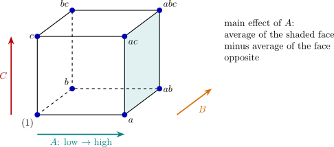

8.2 The \(2^3\) design and the table of signs
For three factors the eight combinations are the corners of a cube (Figure 9). Each effect is again a contrast with coefficients \(\pm 1\), and the coefficients are conveniently set out in a table of plus and minus signs. The rows are the runs in standard order, in which \(a\) is introduced first, then \(b\) combined with what precedes it, then \(c\), and so on.
| run | \(I\) | \(A\) | \(B\) | \(AB\) | \(C\) | \(AC\) | \(BC\) | \(ABC\) |
| \((1)\) | \(+\) | \(-\) | \(-\) | \(+\) | \(-\) | \(+\) | \(+\) | \(-\) |
| \(a\) | \(+\) | \(+\) | \(-\) | \(-\) | \(-\) | \(-\) | \(+\) | \(+\) |
| \(b\) | \(+\) | \(-\) | \(+\) | \(-\) | \(-\) | \(+\) | \(-\) | \(+\) |
| \(ab\) | \(+\) | \(+\) | \(+\) | \(+\) | \(-\) | \(-\) | \(-\) | \(-\) |
| \(c\) | \(+\) | \(-\) | \(-\) | \(+\) | \(+\) | \(-\) | \(-\) | \(+\) |
| \(ac\) | \(+\) | \(+\) | \(-\) | \(-\) | \(+\) | \(+\) | \(-\) | \(-\) |
| \(bc\) | \(+\) | \(-\) | \(+\) | \(-\) | \(+\) | \(-\) | \(+\) | \(-\) |
| \(abc\) | \(+\) | \(+\) | \(+\) | \(+\) | \(+\) | \(+\) | \(+\) | \(+\) |
The columns for the main effects give the levels of the factors. Every other column is the elementwise product of the columns of the factors in its name: the \(AB\) column is \(A\) times \(B\), and so on. The table has three properties that the whole theory of two-level designs rests on:
- (i)
- every column except \(I\) has as many \(+\) as \(-\) signs;
- (ii)
- the elementwise product of any two different columns is a column of the table, for example \(A \cdot B = AB\) and \(AB \cdot BC = AB^2C = AC\), since a column times itself is \(I\);
- (iii)
- consequently any two different columns are orthogonal: their product is a column other than \(I\), whose entries sum to zero.

Questions on this section
Stuck on something here? Ask below and it stays attached to this topic.